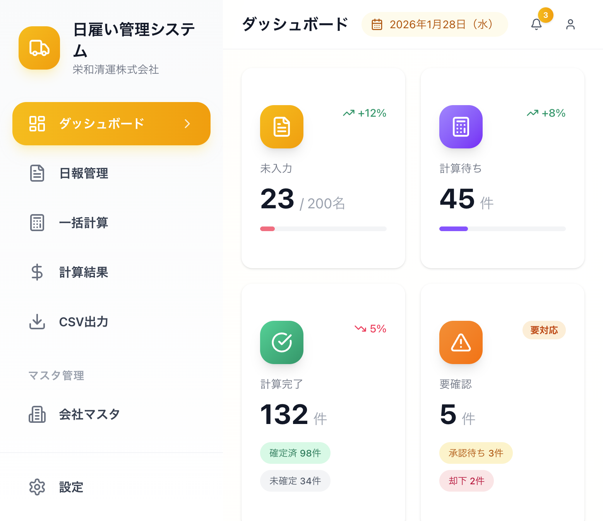
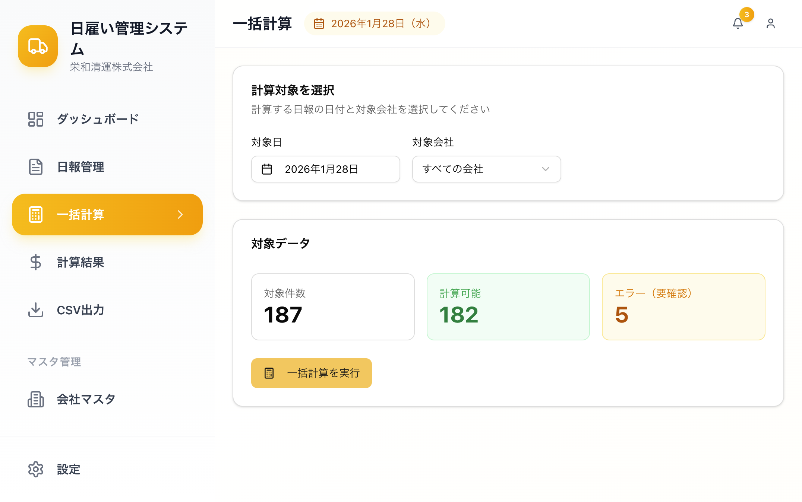
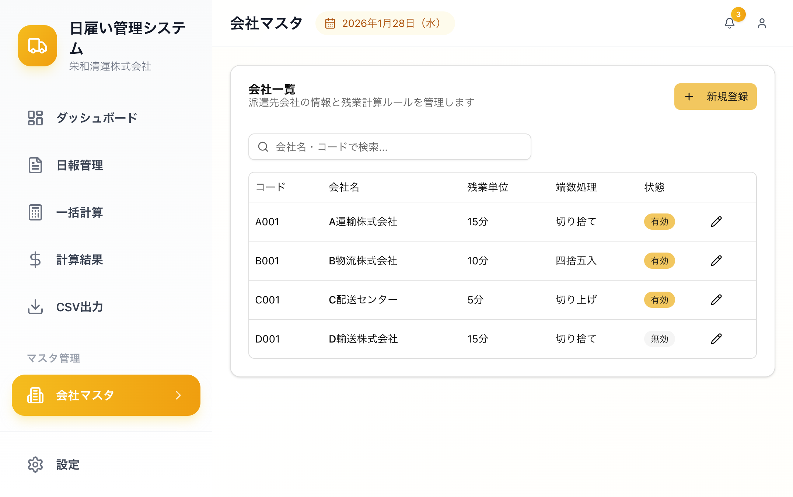

1. システム概要
このシステムは、日雇い運転手の日報管理と給与計算を効率化するためのWebアプリケーションです。
アクセスURL
管理者用
https://eiwa-hiyatoi.netlify.app/
運転手用
https://eiwa-hiyatoi.netlify.app/driver/report
主な機能
📝
日報入力
運転手がスマホから簡単に日報を入力できます
✅
承認ワークフロー
管理者が日報を確認し、承認・却下できます
💰
自動給与計算
残業や休日出勤を自動で計算します
📊
CSV出力
給与データをExcelで使える形式で出力できます
2. 運転手向け：日報入力の方法
運転手の方は、毎日の勤務終了後にスマートフォンから日報を入力してください。
日報入力画面

図：日報入力画面（スマートフォン表示）
入力手順
- 派遣先を選択 - 本日勤務した会社を選んでください
- 車種を選択 - 運転したトラックの車種（2t、4t、10t）を選んでください
- 出勤・退勤時間を入力 - 実際に勤務した時間を入力してください
- 休憩時間を選択 - 取得した休憩時間を選んでください
- 休日出勤の場合はチェック - 日曜・祝日に勤務した場合はチェックを入れてください
- 「日報を提出」ボタンを押す - 入力内容を確認して提出してください
⚠️ 注意
日報は提出後、管理者の承認が必要です。却下された場合は修正して再提出してください。
勤務履歴の確認

図：勤務履歴画面
画面下部の「勤務履歴」タブから、過去の勤務記録を確認できます。月ごとの出勤日数、総労働時間、総支給額が表示されます。
3. 管理者向け：ダッシュボードの見方
管理者としてログインすると、ダッシュボード画面が表示されます。

図：管理者ダッシュボード
ダッシュボードの構成
📝
未入力
本日まだ日報を入力していない運転手の人数
⏳
計算待ち
承認済みで給与計算が必要な日報の件数
✅
計算完了
給与計算が完了した日報の件数
⚠️
要確認
承認待ちや却下などの対応が必要な件数
サイドバーメニュー
- ダッシュボード - 全体の状況を一覧で確認
- 日報管理 - 運転手が提出した日報の確認・承認
- 一括計算 - 承認済み日報の給与を一括計算
- 計算結果 - 計算された給与の確認・修正
- CSV出力 - 給与データをファイルで出力
- マスタ管理 - 会社・車種・賃金ルール・作業員の管理
4. 管理者向け：日報の承認・却下
運転手が提出した日報は、管理者が確認して承認または却下します。

図：日報管理画面
承認・却下の手順
- サイドバーから「日報管理」をクリック
- 日報一覧から「承認待ち」のステータスを確認
- 内容を確認して「承認」または「却下」ボタンをクリック
- 却下する場合は却下理由を入力（運転手に通知されます）
✅ ポイント
承認された日報のみが給与計算の対象になります。内容に不備がある場合は却下して、運転手に修正を依頼してください。
ステータスの意味
- 下書き - 運転手が入力中（未提出）
- 承認待ち - 運転手が提出済み、管理者の確認待ち
- 承認済 - 管理者が承認、給与計算可能
- 却下 - 管理者が却下、運転手の修正待ち
5. 管理者向け：給与計算
一括計算

図：一括計算画面
- サイドバーから「一括計算」をクリック
- 計算対象の日付と会社を選択
- 対象件数を確認して「一括計算を実行」ボタンをクリック
計算結果の確認

図：計算結果画面
計算結果画面では、各運転手の給与明細を確認できます。残業時間や合計金額が自動計算されています。
💡 ヒント
「拘束14時間超」や「手動調整あり」などの警告マークがついている場合は、内容を確認してください。必要に応じて手動で金額を調整できます。
6. 管理者向け：マスタ管理
システムで使用する基本データ（会社、車種、賃金ルール、作業員）を管理します。
会社マスタ

図：会社マスタ画面
派遣先の会社情報を管理します。会社ごとに残業の計算単位や端数処理の方法を設定できます。
各マスタの説明
🏢
会社マスタ
派遣先会社の名前、残業単位、端数処理を設定
🚚
車種マスタ
車種ごとの基本日給を設定
💵
賃金ルール
残業単価、深夜割増などの計算ルールを設定
👷
作業員マスタ
運転手の名前、連絡先、ログイン情報を管理
⚠️ 注意
マスタデータの変更は、過去の計算済み給与には影響しません。変更後の日報から新しいルールが適用されます。